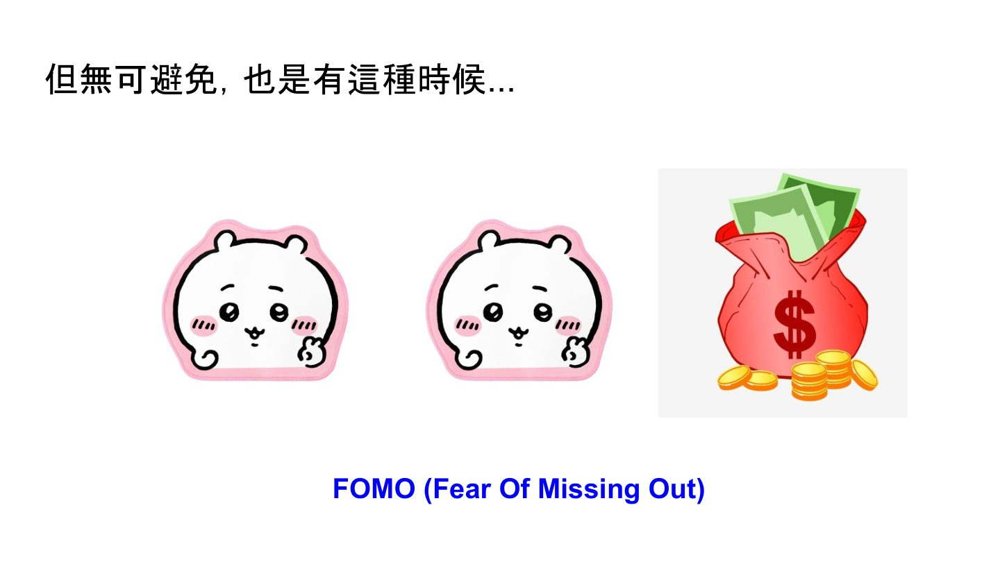
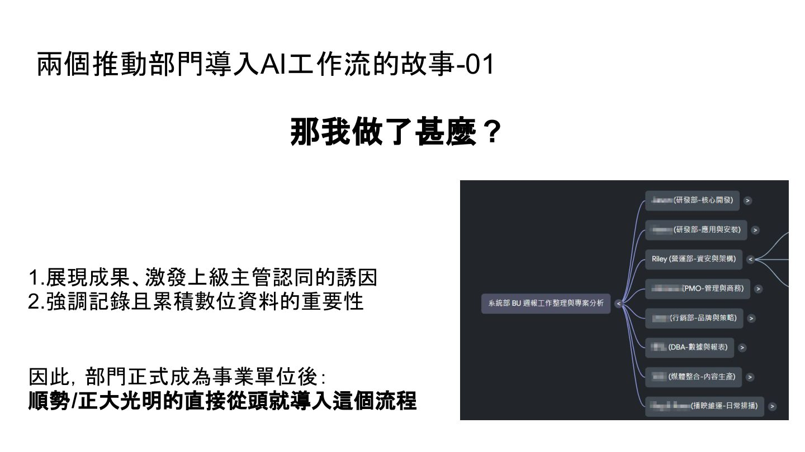
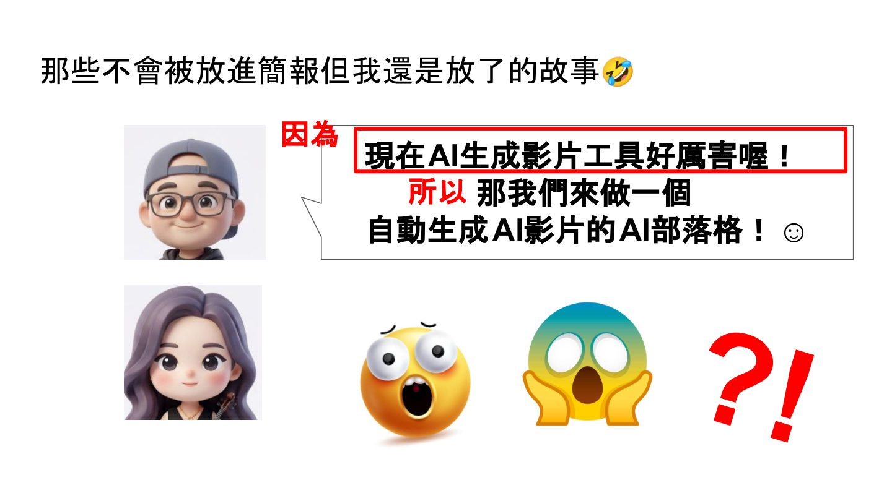

摘要
本演講是一份為中小型企業量身打造的 AI 落地生存指南。講者 Riley Moriarty 透過親身實戰，破除企業因 FOMO（害怕落後）心理而「為了導入而導入」的華麗泡泡，強調 AI 僅是手段，必須以實質痛點為目的。演講透過兩個成功與一個失敗案例進行深度對比：成功案例包含利用個人工作日誌意外推動部門知識庫流程建立，以及導入 NotebookLM、Tactiq 等工具簡化會議紀錄，並以「導入前後對比與現場 Demo」成功說服主管；失敗案例則是盲目嘗試以 Veo 3 等影片生成工具製作衛教影片，導致原本數小時的工作演變為數天人力與高額 Token 成本，專案最終在 2025 年宣告胎死腹中。講者提出核心的「切分思維」，呼籲企業先具象化目的，拆解策略與所需能力，憑藉「取捨的眼光（Taste）」精準區分人與 AI 的工作邊界。
重點整理
- AI 是達成明確目的的手段，不是目的本身；沒有痛點就不需要硬導入
- 案例一：因個人工作日誌習慣意外建立起部門知識庫，進而推動整個 BU 導入記錄與知識管理流程
- 案例二：以省下會議記錄人力為訴求，導入 AI 工具處理會議紀錄，並用「導入前後對比 + Demo + 誘因」說服主管
- 失敗案例：嘗試用 AI（Veo 3 等）自動生成衛教影片部落格，結果成本從 0 元、3-4 小時暴增為 2000 多元 NTD 且耗費 2-3 天人力，最終專案胎死腹中
- 提出「切分思維」：先明確目的，再拆解出達成目的所需的策略與能力，藉此判斷哪些工作該交給 AI、哪些該留給人（Taste，取捨的眼光）
重點圖片／架構圖



打破 AI 導入的迷思
講者開場即點出許多中小企業在導入 AI 時，容易掉入「為了用 AI 而用 AI」的陷阱，忘記 AI 只是解決問題的途徑之一。真正該優先釐清的是「有沒有一個惱人、需要解決的實質痛點」，唯有目的明確，才能挑出適合的技術路徑；而 FOMO（Fear Of Missing Out）正是驅使企業盲目跟風導入 AI 的常見心理陷阱。
案例一：意外催生的部門知識庫
講者分享自己原本只是因為個人習慣把工作日誌寫好寫滿，卻意外發現這些紀錄能被 AI 工具充分利用，進而體會到「資料記錄好、記錄滿」的重要性遠超預期。她因此主導建立專屬 BU 的知識助理與資訊庫，涵蓋專案進度、個人項目完成度、SOP 等內容，並在部門正式升格為事業單位時，順勢從頭導入這套記錄與知識管理流程，同時透過展現成果來爭取上級主管認同。
案例二：用 AI 減少會議紀錄人力
第二個案例聚焦在不想再把人力耗費在會議記錄與推諉工作上，講者選擇讓 AI 工具參與會議紀錄流程，並設定相關權限與工作流程。她說服主管的訣竅是完整呈現導入前後的差異、說明導入後可應用的場景、現場示範一次，並提供誘因，同時搭配 NotebookLM、tactiq 等免費工具降低導入門檻。
失敗案例：AI 影片部落格的教訓
講者也坦承分享一次失敗經驗——看到 AI 生成影片工具強大，便發想「自動生成 AI 影片的衛教部落格」專案，原先設想是結合社區藥局╱診所醫師合作建立衛教影片庫，把真人採訪交給人、把初稿字幕特效等瑣事交給 AI。然而實際執行後，使用 Veo 3 等工具的花費約 2000 多元 NTD，人力卻仍花了 2-3 天，遠高於原本零成本、僅需 3-4 小時的做法，最終專案在 2025 年胎死腹中，印證「理想上省時省力，現實卻可能成本與人力雙雙增加」。
切分思維：判斷什麼該交給 AI
講者以「我要變瘦」與衛教影片庫兩個例子說明「切分思維」：先把抽象目的具象化，再拆解成可執行的具體策略與所需能力。她強調策略節點的關鍵在於依目的判斷哪些工作該交給 AI、哪些必須留給人，這不是技術能力的問題，而是一種取捨的眼光（Taste）。最後她也提醒，若真的沒有明確目的，也不必勉強為了導入而導入。